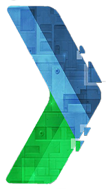

CAN 2015 Extension by GDG MIAGE GI
Version 1.0
Application Chrome Extension développée par la communauté de developpeurs Google GDG MIAGE GI. Cette extension permettra aux utilisateurs Chrome de suivre et d'être au coeur de la Coupe d'Afrique des nations 2015, Guinée Equatoriale.
Application gratuite et à partager au maximum.
Merci de nous envoyer vos suggestions par mail miage.gdg@gmail.com .
Pour plus d'info sur le GDG MIAGE GI, visitez http://gplus.to/gdgmiagegi
Copyright GDG MIAGE GI, Janvier 2015. All rights reserved.